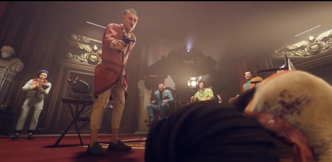
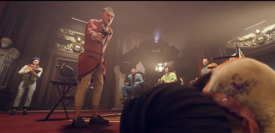
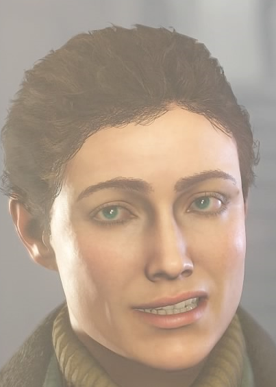

William Joseph Blazkowicz


Captain William Joseph Blazkowicz (pronounced "Blaz-ko-vitz", proper Polish pronunciation "Blaz-ko-vitch"), also known to his friends and allies as B. J. and Blazko, is the main protagonist of the Wolfenstein series, with the exception of Castle Wolfenstein, Beyond Castle Wolfenstein, and Wolfenstein: Enemy Territory. He is an American secret agent of the OSA (Office of Secret Actions) and is known for his many exploits against the Nazi war machine in Europe.
Adolf Hitler
 

Adolf Hitler (April 20, 1889 - April 30, 1945 - WW2) is the "Führer" (leader) of Nazi Germany during the second World War and an important figure in the Wolfenstein series. Although Deathshead is the main antagonist of the series, Hitler is essentially the overarching antagonist of the franchise. Hitler serves as the tertiary antagonist in Wolfenstein II: The New Colossus.
Anya Oliwa
/cdn.vox-cdn.com/uploads/chorus_image/image/57298627/Anya.0.jpg)
Anya Oliwa/Blazkowicz (proper Polish spelling: Ania) is William J. Blazkowicz's ally and lover in Wolfenstein: The New Order. She later becomes his wife and mother of his twin children in the newest installment Wolfenstein 2: The New Colossus.
Rip Blazkowicz


Rip Blazkowicz is the father of William J. Blazkowicz in The New Order timeline, who emotionally and physically abused both him and his mother. While not being a High Ranking Nazi like most of Wolfenstein's antagonists, e.g., Wilhelm Strasse and Irene Engel, his history with B.J. as well as his critical role in B.J.'s capture and subsequent execution has him serve as the secondary antagonist in the New Colossus.
Bombate


Bombate is a resistance fighter and later a member of the Kreisau Circle in Wolfenstein: The New Order. He returns in Wolfenstein II: The New Colossus.
Fergus Reid


Fergus Reid is B.J.'s squad leader during the assault on Deathshead's Compound at the beginning of Wolfenstein: The New Order. He can be saved by B.J. in the 1946 prologue. If chosen to be dissected, he becomes Deathshead's "finest work" for over decades as a prototype for Deathshead's robot, whom he nicknamed Machine Man.
In his timeline, Blazkowicz can upgrade his health bar. Each upgrade adds 10 extra health points to the player's maximum, giving more health, unlike Wyatt's timeline, where the armor is temporary. He is portrayed and voiced by Gideon Emery.
Irene Engel


Obergruppenführer Frau Irene Engel is the secondary antagonist of Wolfenstein: The New Order, and the main antagonist of Wolfenstein II: The New Colossus.
Probet Wyatt III


Probst Wyatt III is a supporting character and old time war buddy of famed American O.S.A agent B.J. Blazkowicz. Though his blue-eyed naiveté can be a burden, his positive outlook on life keeps him fighting to right the wrongs of the world. His life alongside his commander Fergus Reid are determinate by the player. If chosen to live, he will be a member of Caroline Becker's resistance in 1960. If chosen to be dissected, he becomes Deathshead's "finest work" for over decades as a prototype for Deathshead's robot, whom he nicknamed Machine Man.
While in Fergus' timeline, player can collect small red statues to upgrade B.J.'s health, in Wyatt's timeline the player can collect small blue statues for armor upgrade. Each statue gives the player 10 percent more armor from each pickup.
He is portrayed and voiced by A.J. Trauth.
Sigrun Engel


Sigrun Engel is a character in Wolfenstein II: The New Colossus. As Irene Engel's daughter, her life has been torture, living under her mother's cruelty and witnessing firsthand what the Nazis do to "inferior" races.
She eventually joins the BJ and the Resistance in their fight against the Nazis.
Wilhelm Strasse "Deathshead"


Oberstgruppenführer Wilhelm "Deathshead" (Totenkopf) Strasse was a leading member of the German Armed Forces, a gifted researcher and doctor who heads the SS Special Projects Division. He is the arch-nemesis of the series' protagonist William J. Blazkowicz. He serves as the main antagonist of the series first as a minor antagionist in Return to Castle Wolfenstein then the main antagonist of Wolfenstein and Wolfenstein: The New Order.